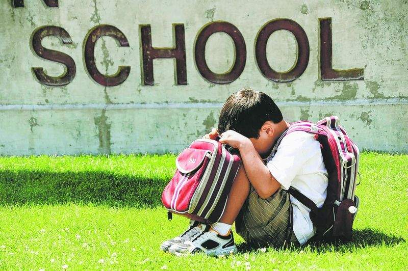

Параскаведекатриафобия — это боязнь пятницы 13.
Термин предложен доктором Доналдом Доссеем, который составил его из греческих слов παρασκευή (пятница) и δεκατρία (тринадцать). Доссей рассматривал сам термин как часть своего метода терапии безрассудных страхов. Данная фобия рассматривается как частный случай трискайдекафобии — боязни числа 13.